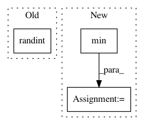

46cb0b5b2cf2d836a2cf96be95d4e25a4004675e,tslearn/clustering.py,KShape,_fit_one_init,#KShape#Any#Any#Any#,729
Before Change
def _fit_one_init(self, X, initial_centroids, rs):
n_samples, sz, d = X.shape
self.labels_ = rs.randint(self.n_clusters, size=n_samples)
if initial_centroids is not None:
self.cluster_centers_ = initial_centroids.copy()
else:
self.cluster_centers_ = rs.randn(self.n_clusters, sz, d)
After Change
def _fit_one_init(self, X, x_squared_norms, rs):
n_ts, _, d = X.shape
sz = min([ts_size(ts) for ts in X])
if hasattr(self.init, "__array__"):
self.cluster_centers_ = self.init.copy()
else:
self.cluster_centers_ = _k_init(X[:, :sz, :].reshape((n_ts, -1)),
self.n_clusters, x_squared_norms, rs).reshape((-1, sz, d))
old_inertia = numpy.inf
for it in range(self.max_iter):
self._assign(X)
In pattern: SUPERPATTERN
Frequency: 4
Non-data size: 3
Instances
Project Name: rtavenar/tslearn
Commit Name: 46cb0b5b2cf2d836a2cf96be95d4e25a4004675e
Time: 2018-10-22
Author: guillaume.androz@gmail.com
File Name: tslearn/clustering.py
Class Name: KShape
Method Name: _fit_one_init
Project Name: metric-learn/metric-learn
Commit Name: ce5f2384bbc999511ec9497c8d34ec19aa81d238
Time: 2016-07-13
Author: perimosocordiae@gmail.com
File Name: metric_learn/constraints.py
Class Name:
Method Name: positive_negative_pairs
Project Name: ysig/GraKeL
Commit Name: 0e84313d49f4b3f5aef0e0d558ecc34e271b2ad5
Time: 2018-01-24
Author: y.siglidis@gmail.com
File Name: grakel/kernels/graphlet_sampling.py
Class Name:
Method Name: sample_graphlets_probabilistic
Project Name: david-abel/simple_rl
Commit Name: 335d758f3348cb2b7a1e03cb8248dfde39f8c439
Time: 2018-08-23
Author: david_abel@brown.edu
File Name: simple_rl/abstraction/state_abs/sa_helpers.py
Class Name:
Method Name: visualize_state_abstr_grid